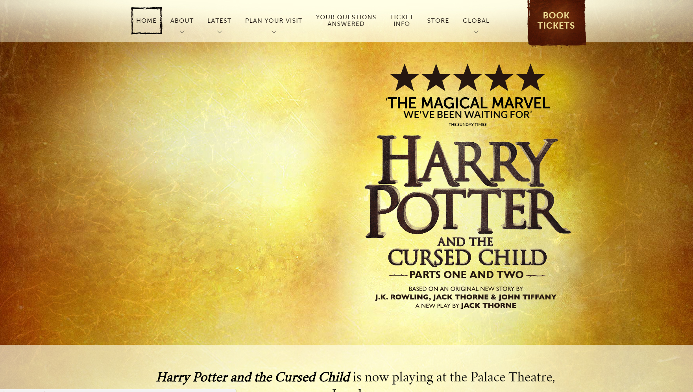

Concurrentie analyse
Waitress
Link naar website
Positief
- Duidelijk wat ze willen verkopen.
- Genoeg informatie over de show, zelfs voor mensen die niet weten waarover het gaat.
- Een duidelijke link om direct naar tickets te gaan.
- Het verkopen van tickets is duidelijk en gemakkelijk met genoeg informatie: tijd, plaats, prijs, aantal tickets en beschikbaarheid.
Negatief
- Ziet er meer een mobile of tablet website uit.
Ticketmaster-The Lion King
Link naar website
Positief
- Groot zoekbalk.
- Mogelijkheid om een revieuw te scrijven. De score van andere gebruikers is ook te zien.
- Rooster met genoeg informatie over de tijd, plaats en beschikbaarheid.
Negatief
- Tekst is zeer klein en is moeilijk te lezen door oudere mensen.
- Sommige links hebben een grijze tint om de path te tonen, maar opnieuw zijn ze moeilijker te lezen.
Harry Potter-uk
Link naar website
Positief
- Navigatie heeft duidelijk weer waar de link naartoe gaan.
- Niet echt functionaliteit, maar de website zelf geeft een gevoel van de Harry Potter wereld weer..
- Je hebt niet alleen de mogeijkheid om tickets te kopen maar ook om heel een bezoek te plannen: wat je rond kunt doen, waar te eten en andere moglijkheden.
Negatief
- De website heeft te veel animaties volgens mij. Duurt een beetje om te laden.
- De links hebben geen hover menu.
